Case study: Forge Design System
Building, extending, and adapting a flexible component library that has delivered on the strategic goals of three separate global enterprises
Forge Design System is the style libraries, UX guidelines, and component library that deliver the LSEG digital experience in support of all marketing, customer support, and product portals. I have served as the UX lead and owner of Forge and its predecessor for nearly a decade. During that time Forge and the UX teams I led had great success in serving the digital experience goals of three separate companies.
Note: LSEG NDAs and security measures prevent me from sharing or accessing any of the design files or design system assets I delivered during my tenure there. As a result, the assets in this case study are limited to screenshots of publicly available live pages.
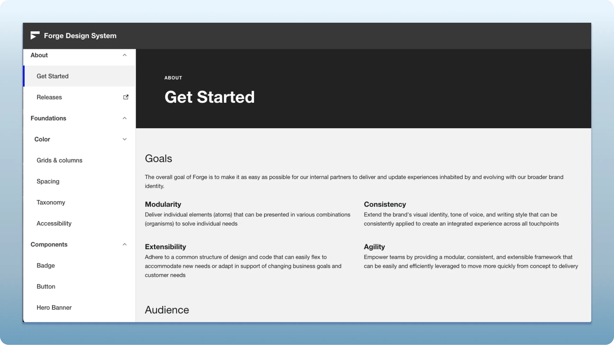
Foundations and style libraries
Forge foundations are the style libraries and tokens representing the core subatomic building blocks from which components and compositions are built to deliver a consistent, accessible, and delightful customer experience. I managed the design, delivery, and integration of libraries for colors, type styles, responsive grids, spacing specifications, and effects across design (Figma), ReactJS, and Adobe Experience Manager (AEM).
An extension of these foundations was guidelines and documentation patterns for using and contributing to Forge, accessibility standards and practices, and documentation components and templates.
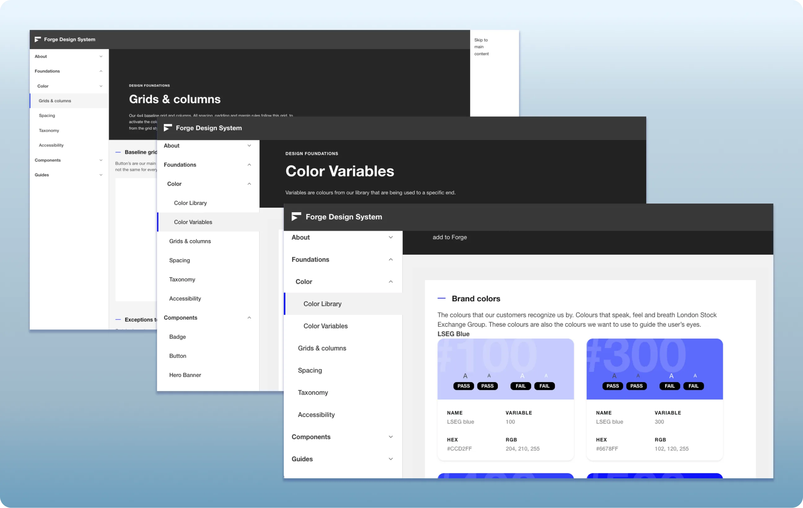
Thomson Reuters
Before it was formally the Forge Design System, the component library and the building blocks that would become Forge were the UX foundation of the OpenWeb Digital Marketing Platform that we delivered for Thomson Reuters on Adobe Experience Manager (AEM).
At that time I was the UX lead for Thomson Reuters Corporate Marketing and owned the UX for both the corporate site and the evolving design system that fed it.
The customer and marketing experience issues that Thomson Reuters faced at the time were significant. An audit of the digital landscape identified hundreds of siloed sites across multiple sub-brands that all had their own visual identities on multiple platforms, resulting in inefficiency of cost, delivery, and maintenance to achieve a very disjointed digital experience.
The goal of Project OpenWeb was to create a digital experience platform that would serve the creation of an integrated experience that could easily be adopted by multiple businesses and sites to facilitate enterprise digital transformation. Our model was to build a digital marketing infrastructure that was robust in user experience, visual design, data and analytics capture, personalization, and metadata architecture and prove its value with the launch of the corporate and financial business marketing sites as a precursor to the integration of the Thomson Reuters digital experience onto that shared platform. The initial result was that the Financial and Corporate sites were successfully launched on the new platform and served as a gateway to the broader digital landscape that would eventually migrate onto the shared platform. The Tax & Accounting business was next to migrate to OpenWeb and at the time of my departure, planning had started for the migration of Legal Solutions.
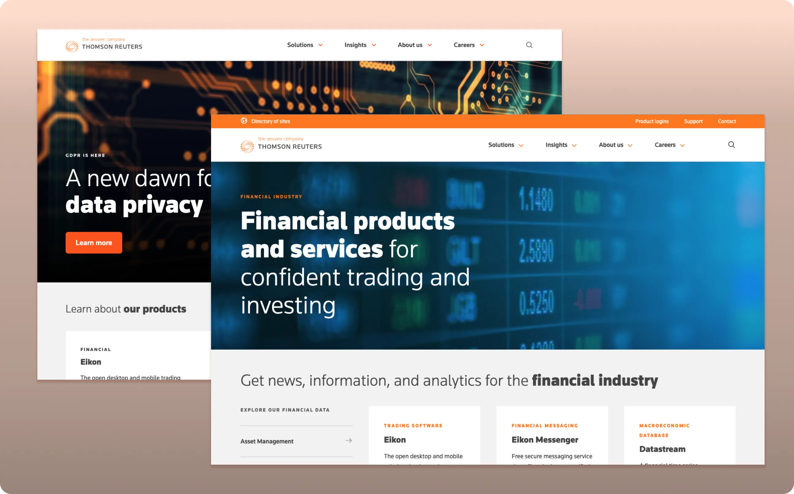
Refinitiv
When Thomson Reuters sold its Financial division, I was reallocated to the new company it formed: Refinitiv. The digital marketing platform and design system we had built for that business immediately proved its worth. Because the system was flexible by design, we could establish a digital presence for the new brand without building from scratch — simply mapping old styles to new ones across the existing component library. The result was a fast, efficient launch of a mature, turnkey platform, ready to deliver content as soon as it existed.
It was during this period that the Forge Design System was formally created: a platform-agnostic ReactJS component library that could be integrated with the AEM-based marketing platform or deployed independently for use cases outside marketing. That flexibility would prove even more valuable when Refinitiv itself became part of LSEG.
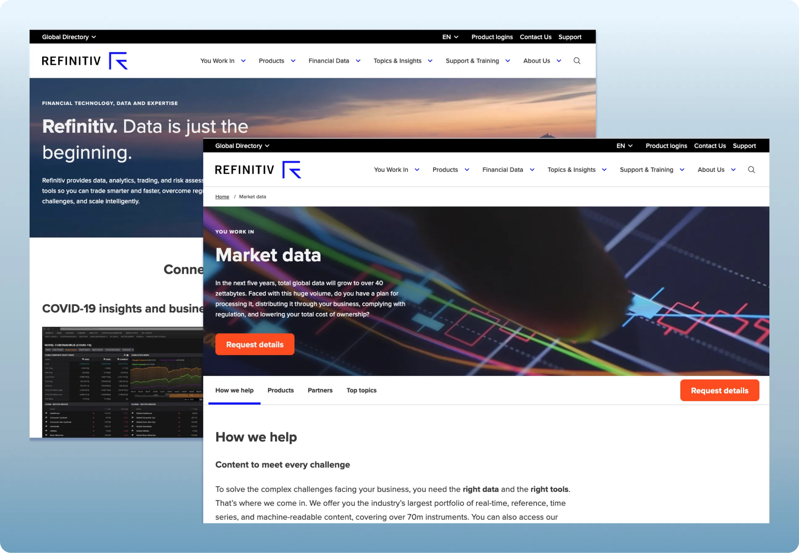
LSEG
When Refinitiv was sold to LSEG, the future of Forge was uncertain. It quickly became clear, though, that LSEG faced the same problem that had originally driven the creation of Forge and the OpenWeb platform at Thomson Reuters: multiple sub-brands, on a variety of platforms, adding up to a disconnected customer experience. Forge's value as a solution was obvious, so we began strategizing how to use it to power a broader LSEG digital transformation — what we called the OneLSEG integrated experience.
That work had two goals, and both are still ongoing today. The first was establishing a shared brand identity across all of LSEG's businesses. The second was building a more integrated customer experience — one that could meet any individual user's immediate need while still surfacing the full breadth of LSEG's content, data, and solutions.
Three stages of LSEG rebranding
The first step was rebranding Forge again — mapping Refinitiv's styles onto the new LSEG identity and extending the brand system with colors, type styles, logos, and spacing built for a robust, accessible digital experience. Then, just as we had done for Thomson Reuters years earlier, we launched the main corporate site on the newly rebranded platform.
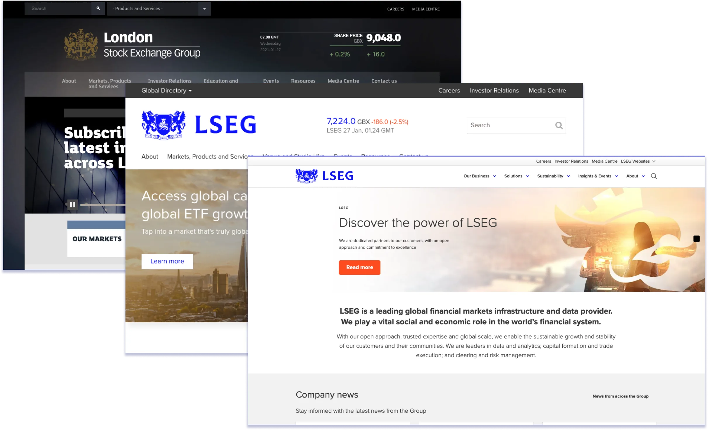
OneLSEG Phase 1
Following the release of LSEG.com on Forge and AEM, we worked closely with two teams: the brand team, to refine a shared visual identity across the master brand and all sub-brands, and the digital marketing team, to establish an information architecture connecting the corporate site, sub-brand sites, and customer portals.
LSEG integrated corporate site
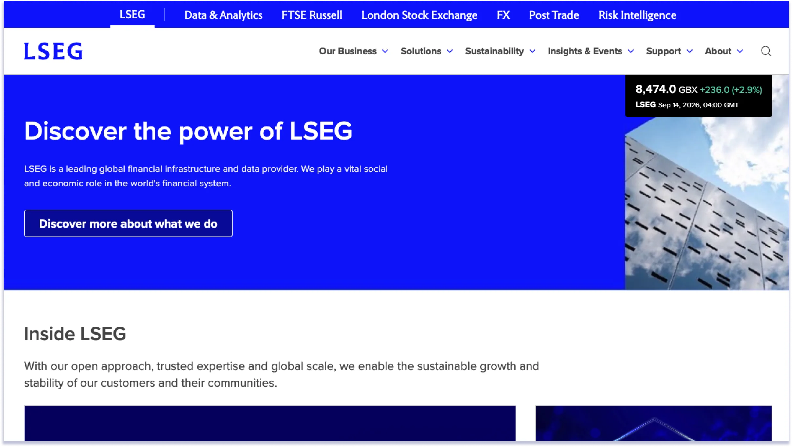
Migration and integration
We then spent nearly two years supporting the migration of all LSEG digital marketing properties onto the platform. Phase 1 of the integrated LSEG experience — using global navigation and a shared information architecture to connect what were previously standalone sites — is now nearly complete.
In a relatively short span, we transformed the LSEG digital experience from multiple sites, with disparate branding on multiple platforms, into a shared brand identity on one platform with a common data layer — one where users can explore LSEG's content, data, and solutions from any entry point. Along the way, we enhanced existing components and built new ones to meet each new site's specific experience and content needs.
Prior to my departure from LSEG, all sub-brand sites had been migrated to Forge and AEM with the exception of londonstockexchange.com, which launched at the beginning of Q3 2026.
Rebranding of sub-brand sites and migration to Forge and AEM
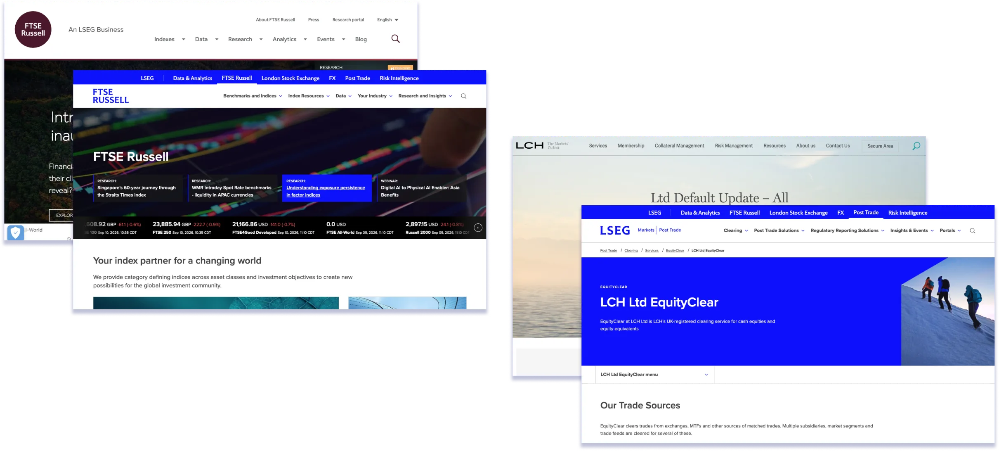
OneLSEG Phase 2
Having achieved Phase 1's main goals, Phase 2 turned to building a truly integrated, single-site LSEG experience: a more dynamic, motion-forward visual identity, renewed emphasis on thought leadership and events, and a more robust, intuitive data discovery experience. I led the UX and visual design of this transformation during my final months at LSEG.
Some highlights of my contributions over that time that are currently in development and expected to launch this year:
- New design and IA for integrated site header and navigation (all LSEG sub-brands as one site)
- Homepage redesign:
- Animated (subtle) hero with accessibility controls to pause animation
- Featured product and sub-brand animated cards with card group accessibility toggle
- Spotlight on Insights (thought leadership) cards and card block
- Featured/related insights card carousel for use in product/category pages
- New@LSEG (product updates and press releases page) visual refresh
Phase 2 examples already launched
New Events landing page
- Page and new components designed by me
- New events-specific card variant
- Updated to reflect new photography/graphics style
- Dynamic feed of events content to ensure all upcoming events are available
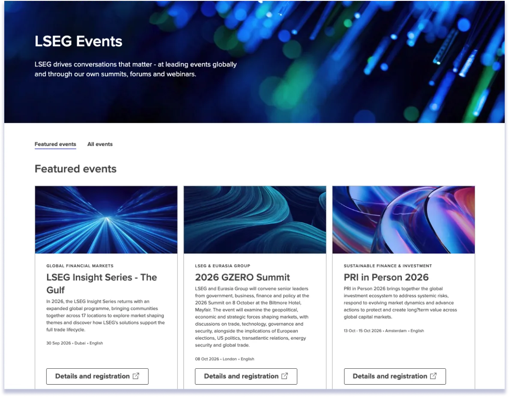
Data Catalog redesign
- Fly-in modal enhancements to support quick view comparison of data sets
- Left filter UX and visual improvements
- Dynamic templates populated via a feed
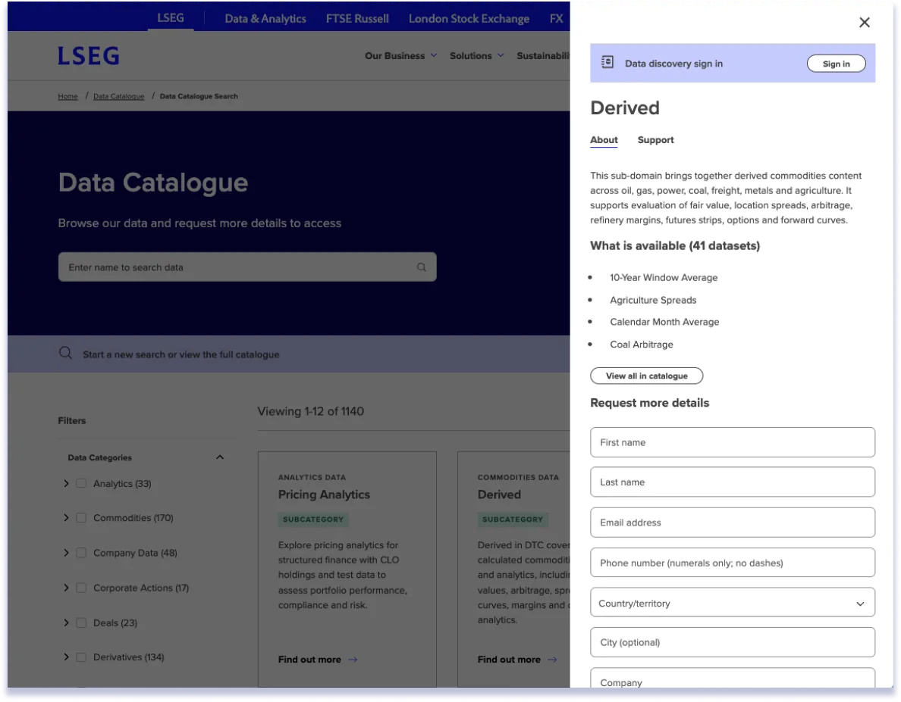
LSEG data presentation and data visualization
LSEG has a robust financial Data & Analytics division which afforded me the opportunity to work with and design for a wide range of dynamic data display and visualization use-cases. My work in this area included managing data grid components (custom and customized AG Grid) and charts and data viz experiences using Chart.JS, Financial.com charts, and custom data visualizations.
Data grid and data visualization examples
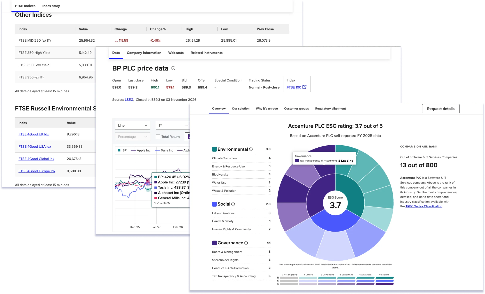
Forge experience integration and efficiency beyond marketing
In the early days of Refinitiv, we made the decision to separate the front-end of the design system and launched a platform-agnostic ReactJS component library and CSS that could be leveraged by use-cases outside of marketing and AEM. We also initiated a secondary theme and branch of Forge that allowed us to use tokens to apply subtle visual differences between authenticated customer portals/applications and the marketing experience. Forge components are now used directly by a number of customer support sites that sit between the marketing and product experience and Forge works as a bridge between the digital and product experiences. Another key new feature of this branch was the addition of an application switcher that allows customers to move between resources relevant to their customer profile.
Authenticated portal examples using Forge outside AEM
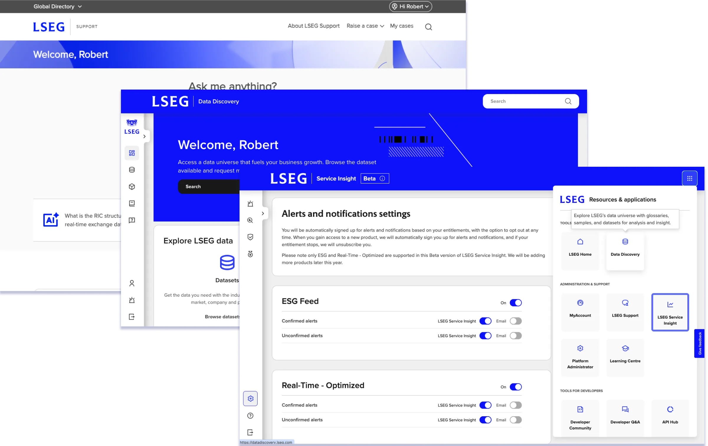
Forge Design System: Case study conclusion
Forge, and the Thomson Reuters marketing platform design system that preceded it, has been at the center of my work and growth as a UX leader for nearly a decade. It has kept me engaged because it never stopped giving me room to evolve — as a strategist, a team leader, and a designer — and to build real partnerships with project teams, partners, and stakeholders in service of digital transformation goals across three global enterprises. That journey has given me deep expertise across information architecture, digital strategy, design systems, service design, accessibility, product ownership, and program management, built on a genuinely broad foundation. I believe that combination — depth paired with range — is exactly what's needed to help the right team meet this moment: partnering with powerful new AI tools not just to adopt them, but to define what comes next.
Robert Chance
UX leadership & strategy
Minneapolis, MN